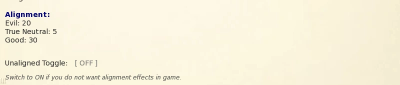
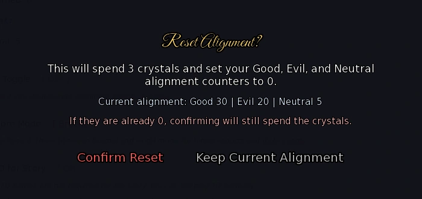
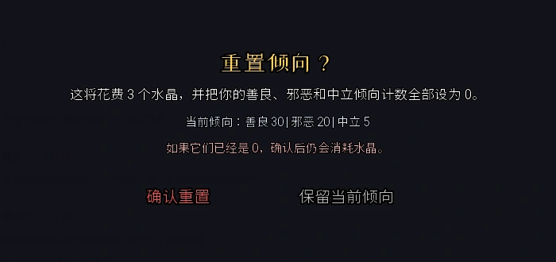

Select a screenshot to enlarge it. Screens show example inventories and progress.
Alignment has three independent point totals: Good, Evil and Neutral. For an alignment reward, first check how far your highest total leads the second-highest, then plan your daily actions. Earning 90 or 100 points on one axis does not by itself reach those lead thresholds. Verified for the complete released v1.0 Beta x.
Check your lead first
Open Notebook Page 8 for the three counters and Unaligned switch; relevant character displays also show alignment status. Subtract the second-highest total from the highest: a lead of 0–9 is Unaligned; 10+ activates the leading axis. Counters floor at zero and can keep growing after the display reaches its maximum.
| Good / Evil / Neutral | Lead | Result |
|---|---|---|
| 30 / 20 / 5 | 10 | Good, Tier 1 |
| 30 / 30 / 0 | 0 | Unaligned; highest totals tie |
| 100 / 20 / 0 | 80 | Good, Tier 8; not Tier 10 |
| 0 / 0 / 100 | 100 | Neutral, Tier 10 |
Raising the runner-up can lower your tier even when the highest counter stays unchanged. Raising a third-place counter may not change your lead yet. Switching axes means closing the old gap and building a new lead, or using a reset below.

Ten tiers and the number in brackets
The Notebook’s True Neutral counter is the Neutral axis, not Unaligned.
Show all tier names and lead thresholds
| Tier | Lead | Evil | Neutral | Good |
|---|---|---|---|---|
| 1 | 10–19 | Mischievous | Detached | Kind |
| 2 | 20–29 | Selfish | Impartial | Honorable |
| 3 | 30–39 | Cruel | Pragmatic | Virtuous |
| 4 | 40–49 | Ruthless | Balanced | Noble |
| 5 | 50–59 | Sinister | Centered | Righteous |
| 6 | 60–69 | Wicked | Steady | Heroic |
| 7 | 70–79 | Malevolent | Unswayed | Saintly |
| 8 | 80–89 | Diabolical | Equilibrium | Exalted |
| 9 | 90–99 | Nefarious | Harmonized | Divine |
| 10 | 100+ | Abyssal | Eternal | Celestial |
Each ten points of lead adds one tier: Tier 9 needs a 90-point lead; Tier 10 needs 100. A bracketed number is the position within that tier: Cruel (4) means Evil leads by 34. The display caps at a lead of 109, while the counters keep growing. Within-tier positions do not increase tier-based combat bonuses.
Daily actions you can plan around
Each of these nine actions has its own once-per-in-game-day attempt. Failed prayer, meditation or theft still spends that action’s attempt; it returns the next day. Costs are base values and location access/opening hours still apply.
| Action | Location | Base cost | Alignment result |
|---|---|---|---|
| Neutralizer | Cognitive Optimization Academy — Future, Prime Sector | 60 min; 30 Energy, 30 Calm; $200 | Guaranteed −1 Good, −1 Evil, +1 Neutral |
| Volunteer | City Hospital — Present, Uptown | 60 min; 30 Energy, 30 Calm | Guaranteed +1 Good |
| Pray | Monk’s Temple Training Hall — Medieval, Village Outskirts | 30 min | 25% chance +1 Good |
| Meditate | Mystic’s Meditation Grove — Medieval, Village Outskirts | 30 min | 25% chance +1 Neutral |
| Steal Supplies | Village Market — Medieval, Village Outskirts; 06–21 | 20 min | Independent 25% chance +1 Evil |
| Steal Valuables | Exotic Goods Merchant — Medieval, Kings Demesne; 06–21 | 20 min | Independent 25% chance +1 Evil |
| Steal Coins | General Goods Store — Medieval, Kings Demesne; 06–21 | 20 min | Independent 25% chance +1 Evil |
| Pickpocket Crowd | Bards Guild — Medieval, Kings Demesne; 13–24 | 20 min | Independent 25% chance +1 Evil |
| Pickpocket Warriors | Fighters Guild — Medieval, Kings Demesne; 10–20 | 20 min | Independent 25% chance +1 Evil |
Show theft unlocks, success caps and loot
All five thefts require Thieves Guild Clout 10+ and Sleight of Hand, taught by Sabrina. Loot success uses your modified Rogue percentage, limited by each cap below.
| Action | Loot-success cap | Successful loot |
|---|---|---|
| Steal Supplies | 90% | 1–9 Common and 1–3 Rare ingredients |
| Steal Valuables | 75% | 1–4 Valuables |
| Three coin thefts | 85% | $10–50 plus a random Luck bonus |
The 25% Evil roll is independent of loot success, so a failed theft can still award Evil. A separate 25% chance of +1 Thieves Guild Clout is rolled only after successful theft. Higher Rogue helps loot, not the independent Evil roll. The coin bonus is a random integer from floor(modified Luck / 2) through modified Luck.
Points from stories, work and exploration
Steal Chocolate Bar at Present Uptown’s Corner Convenience Store is once-ever: 20 minutes, +1 Evil, +1 core Rogue and 1 Chocolate. It is not a daily farm. The Sensei work shift at the Present Downtown Dojo gives a 15% chance of +1 Neutral on completion: Stamina 30+, Martial Artist or Jack of All Trades, 10:00–22:00, base 60 minutes / 30 Energy.
Only choices explicitly mapped to alignment award points, normally +1 to that axis; not every Caring/Funny/Flirty option is mapped. Restarting the same plot with R and changing to another mapped choice revokes the prior award before applying the new one. Repeating it does not stack points. EXTRAS replay does not award live alignment points.
Show Search and dungeon differences
Search choices commonly roll 25% for +1, but depend on the encounter; Search is not a guaranteed point award. Earlier ordinary dungeon floors include direct +1 choices. Many qualifying Void-floor branches (36–40) roll 50% for +1; others add points directly or shift +1 to one axis and −1 to both others. Current qualifying Mech-floor branches (41–45) use 100% for +1. Selected Final Depths branches (46–50) award points too. Refusing, lacking an item/payment or failing an earlier gate does not guarantee a point. Infinity Dungeons do not generate these ordinary scenarios.
Relationship compatibility
Normal randomized relationship gains adjust the minimum and maximum of the point roll, rather than adding a fixed amount every time. The minimum floors at 1; the maximum is raised if needed to avoid an inverted range. Daily-limit penalties remain separate, and flat direct rewards may not use this calculation.
| Compatibility | Minimum change | Maximum change |
|---|---|---|
| Same axis | +1 | +2 |
| Good vs Evil | −2 | −1 |
| Neutral vs Good/Evil | 0 | −1 |
| Player Unaligned | 0 | 0 |
To reveal NPC alignment icons in Relationships, learn Soul Sight from Azariel at Close Friend+: base 120 minutes, 40 Energy, 30 Calm and 1 crystal. NPC alignment and a stage such as Friend/In Love are separate values.
Show relationship key-item modifiers
| Item | Effect and acquisition |
|---|---|
| Balance Scales | Kupie’s Love Training reward. Same axis adds another +1 minimum; opposition or Neutral mismatch adds +1 maximum. Cancels the −1 maximum mismatch penalty, but not Good/Evil’s −2 minimum. No compatibility effect while Unaligned. |
| Draculas Ring | Ruxandra’s Blood Alchemy: 70 Blood Orbs, effective Vampire 25+ to unlock. +1 maximum with a matching active axis; stacks with Scales. Inactive while Unaligned. |
| Cthulhus Head | Adds +1 base relationship points with Evil NPCs before favorite stats, special skills and range conversion. Your own axis need not be Evil; naturally Unaligned works. The manual Unaligned switch disables this effect. |
| Ocean Fragrance | Shelly’s Gift Shop, Sirena Isle: 60 sea shells. +1 maximum with Neutral NPCs regardless of your own axis, including either form of Unaligned. |
Other items can add independent bonuses: Demon’s Lure and Grandmaster’s Signet each add +1 maximum without requiring matching alignment.
Combat benefits
Good: +5% per tier to Light Magic’s damage calculation, from +5% to +50%. Evil: the same scaling for Dark Magic. These do not boost all attacks, Fire/Ice or healing. Neutral: if Tai-Chi is learned, each tier adds three percentage points to both its trigger chance and reflected share.
Tai-Chi starts at 5% chance to reflect 5%; Neutral Tier 10 reaches 35% chance / 35% share. Becoming Neutral does not teach it. Lilu’s Tai-Chi Mastery at the Present Downtown Dojo requires Ability 60, Romantic+ and the applicable content access; base 350 minutes, 180 Energy and 100 Calm. This training is unavailable while visibly pregnant.
Show tier values and coverage limits
| Tier | Good Light / Evil Dark bonus | Tai-Chi chance | Tai-Chi reflected share |
|---|---|---|---|
| No active tier | — | 5% | 5% |
| 1 | +5% | 8% | 8% |
| 2 | +10% | 11% | 11% |
| 3 | +15% | 14% | 14% |
| 4 | +20% | 17% | 17% |
| 5 | +25% | 20% | 20% |
| 6 | +30% | 23% | 23% |
| 7 | +35% | 26% | 26% |
| 8 | +40% | 29% | 29% |
| 9 | +45% | 32% | 32% |
| 10 | +50% | 35% | 35% |
Light/Dark alignment enters spell damage before its normal roll and later defenses. A Tai-Chi proc subtracts the reflected portion from the incoming hit and sends it through enemy damage/force-field rules. It supports ordinary enemy damage skills and web attacks; it does not cover every status tick, special attack or percentage-Health mechanic. Enemy fields and story-battle rules can limit the return.
Three master alignment items
Each event needs the matching active axis at Tier 9+, a 90-point lead over the runner-up, plus In Love with its NPC. Keep the manual Unaligned switch OFF, enter the exact location and complete the one-time event. There is no separate crystal purchase cost; location access still applies.
| Axis | Key item | NPC / trigger room | Effect while owned |
|---|---|---|---|
| Good | Helmet of Immortality | Seraph — Seraph’s Sanctuary, Future Fringe Zone | Catches a qualifying lethal heavy hit, leaving 1 Health. |
| Evil | Hell Fire | Lillian — Lillian’s Lair, Medieval Kings Demesne | +10% physical damage; +50% Fire Magic damage. |
| Neutral | Shield of Balance | Azariel — Secret Room, Rose & Thorn | 15% reduction to supported direct enemy attack/spell damage. |
These are passive key items, not equipment-slot items. Their effects remain after switching axes, resetting or becoming Unaligned; all three can be owned together. Good 90 / Evil 30 / Neutral 0 only leads by 60 and does not qualify for the Good item.
Show essential helmet and damage-reduction limits
Helmet of Immortality needs current Health above 10, a final hit of at least 250 that is still lethal, and 10 battle turns since its last activation. It starts each battle ready and clamps damage to current Health −1. A normal active force field skips the check; a supported field-bypassing attack can still reach it. Smaller lethal hits, low Health, cooldown and unsupported damage are not covered. Heal after it activates.
Hell Fire’s +50% Fire and Fire Elemental Talisman’s +20% combine additively to +70% at that step, with other modifiers applied separately. Evil’s Dark bonus affects a different spell. Shield of Balance multiplies supported direct damage by 0.85 with rounding; it does not universally reduce every resource loss, damage-over-time tick or scripted minimum-damage mechanic.
Unaligned switch and reset
Natural Unaligned comes from a lead below 10. Turning the manual Unaligned switch ON overrides active alignment without clearing counters; actions keep changing them. Both forms disable active compatibility, Good/Evil spell-tier bonuses, Neutral’s extra Tai-Chi scaling and master-item event gates. Learned Tai-Chi keeps its base 5% / 5%. Switching OFF recalculates from your current totals.
The distinction: Cthulhus Head works while naturally Unaligned but is disabled by the switch. Ocean Fragrance and already-owned master alignment items continue working in either case.
To clear counters, choose Reset Alignment in Azariel’s Secret Room at Rose & Thorn and review its confirmation. Confirming spends 3 crystals, 0 minutes and sets all three counters to zero; cancelling does not reset. Confirming with all counters already zero still spends the crystals. Resetting does not change the Unaligned switch or remove owned key items.
Neutralizer is not a reset: once daily it removes one Good and Evil, floored at zero, and adds one Neutral. Choose a gradual transition or crystal reset based on the existing gap. Collecting all three items still needs each NPC’s relationship and location gate. Finish on the axis that suits your spells, Tai-Chi and relationship goals.

Achievement progress and later content
Alignment Extremes records distinct axes ever held at a 100-point lead. Its Sanctum trophy ranks require one, two and three different axes. It reads raw counters, so the Unaligned switch does not prevent recording, and a later reset does not erase earned progress. It does not mean three axes are active at once.
Post-story opt-in: relationship crystal visitor selection
After the main story, relationship crystal reward visits compare raw Good and Evil totals: more Good selects Seraph, more Evil selects Lillian, and a tie chooses randomly. Neutral and the Unaligned switch do not determine this choice. The visitor is retained through that claim rather than rerolled by R; the normal reward-claim requirements still apply.
Common blockers and practical choices
| Problem | What to check |
|---|---|
| 90 points but no item event | Need a 90-point lead, not 90 total; also In Love, exact room and switch OFF. |
| Daily action disappeared | Today’s attempt is used even on failure; theft also needs Clout 10 and Sleight of Hand. |
| Tai-Chi weaker than expected | Check learned skill, active Neutral tier and switch; Tier 10 is 35% / 35%, not guaranteed. |
| Helmet did not save you | Check final damage ≥250, current Health >10, cooldown and force-field handling. |
For reliable Good, schedule hospital volunteering; for gradual Neutral, use Neutralizer; Evil has five separate daily theft opportunities. Choose the reward you want before spending time. No axis is universally optimal for every battle.
阵营倾向分为善良、邪恶、中立三项独立点数。想取得某一阵营的奖励，先看自己领先第二高项多少点，再安排每天的行动。单纯把某项刷到90或100，并不一定达到对应门槛。适用于完整发行版v1.0 Beta x。
先看点数差
打开笔记本第8页查看三项点数和「无阵营」开关；也可在相关角色界面查看当前倾向。用最高项减去第二高项：差值0–9为无阵营，10起激活领先的阵营。点数不会低于0，但可继续增长，不会因为显示达到最高级就停止。
| 善良／邪恶／中立 | 领先值 | 结果 |
|---|---|---|
| 30 / 20 / 5 | 10 | 善良，第1级 |
| 30 / 30 / 0 | 0 | 无阵营；最高项并列 |
| 100 / 20 / 0 | 80 | 善良，第8级；尚未达到第10级 |
| 0 / 0 / 100 | 100 | 中立，第10级 |
提高第二高项会缩小领先差值，即使最高项没有下降，也可能降低当前等级。提高仍低于第二名的第三项，则不一定立即改变领先值。想改换阵营，需要先追平旧差距，再建立新领先；也可以使用下文的重置。
十个等级与括号数字
笔记本中的「绝对中立」就是这里的中立点数，不是「无阵营」。
展开全部等级名称与领先值
| 等级 | 领先值 | 邪恶 | 中立 | 善良 |
|---|---|---|---|---|
| 1 | 10–19 | 调皮 (Mischievous) | 疏离 (Detached) | 种类 (Kind) |
| 2 | 20–29 | 自私 (Selfish) | 公正 (Impartial) | 正直 (Honorable) |
| 3 | 30–39 | 残酷 (Cruel) | 务实 (Pragmatic) | 美德 (Virtuous) |
| 4 | 40–49 | 冷酷 (Ruthless) | 平衡 (Balanced) | 高贵 (Noble) |
| 5 | 50–59 | 阴险 (Sinister) | 居中 (Centered) | 正义 (Righteous) |
| 6 | 60–69 | 邪恶 (Wicked) | 稳定 (Steady) | 英勇 (Heroic) |
| 7 | 70–79 | 恶意 (Malevolent) | 不为所动 (Unswayed) | 圣洁 (Saintly) |
| 8 | 80–89 | 邪恶 (Diabolical) | 均衡 (Equilibrium) | 崇高 (Exalted) |
| 9 | 90–99 | 邪恶 (Nefarious) | 和谐 (Harmonized) | 神圣 (Divine) |
| 10 | 100+ | 深渊 (Abyssal) | 永恒 (Eternal) | 天界 (Celestial) |
每增加10点领先值提升一级：第9级要求领先90点，第10级要求领先100点。括号表示当前等级内的余数，例如Cruel (4)表示邪恶领先34点。显示在领先109点时封顶，但实际点数仍可增加。等级内的括号数字不会额外提高按等级计算的战斗加成。
每天能做的行动
以下九项行动各自每天最多尝试一次。祈祷、冥想或偷窃失败，同样会用掉当天该项次数；次日才重新出现。费用为基础值，地点进入条件与开放时间照常生效。
| 行动 | 地点 | 基础消耗 | 阵营结果 |
|---|---|---|---|
| 中和器 (Neutralizer) | 认知优化学院 · 未来／核心区 | 60分钟；30精力、30镇定；$200 | 必定善良−1、邪恶−1、中立＋1 |
| 志愿服务 (Volunteer) | 城市医院 · 现代／上城区 | 60分钟；30精力、30镇定 | 必定善良＋1 |
| 祈祷 (Pray) | 僧侣寺院修行厅 · 中世纪／村庄郊外 | 30分钟 | 25%概率善良＋1 |
| 冥想 (Meditate) | 修行者冥想林 · 中世纪／村庄郊外 | 30分钟 | 25%概率中立＋1 |
| 偷补给 (Steal Supplies) | 村庄市场 · 中世纪／村庄郊外；06–21时 | 20分钟 | 独立25%概率邪恶＋1 |
| 偷贵重品 (Steal Valuables) | 异域商品商人 · 中世纪／国王领地；06–21时 | 20分钟 | 独立25%概率邪恶＋1 |
| 偷钱币 (Steal Coins) | 杂货店 · 中世纪／国王领地；06–21时 | 20分钟 | 独立25%概率邪恶＋1 |
| 扒窃人群 (Pickpocket Crowd) | 吟游诗人公会 · 中世纪／国王领地；13–24时 | 20分钟 | 独立25%概率邪恶＋1 |
| 扒窃战士 (Pickpocket Warriors) | 战士公会 · 中世纪／国王领地；10–20时 | 20分钟 | 独立25%概率邪恶＋1 |
展开五种偷窃的解锁、成功率与物品奖励
五种偷窃都要求盗贼公会声望10以上，并已学会Sabrina教授的「巧手」。物品成功率使用计入修正后的盗贼属性，再受下表上限限制。
| 行动 | 成功率上限 | 成功后的物品／金钱 |
|---|---|---|
| 偷补给 | 90% | 普通食材1–9份，稀有食材1–3份 |
| 偷贵重品 | 75% | 贵重物品1–4份 |
| 三种钱币扒窃 | 85% | $10–50，再加幸运带来的随机奖金 |
邪恶＋1的25%判定独立于偷窃是否成功，所以未偷到物品也可能增加邪恶。另有25%概率增加1点盗贼公会声望，但只有偷窃成功后才进行该判定。提高盗贼属性能改善物品成功率，不能提高独立的25%邪恶概率。钱币的幸运奖金为修正后幸运值一半向下取整至完整幸运值之间的随机整数。
剧情、工作与探索中的点数
偷巧克力是现代上城区街角便利店的一次性行动：20分钟，邪恶＋1、基础盗贼＋1、巧克力1份，不能每天重复刷。现代市中心道场的Sensei工作则在完成班次时有15%概率中立＋1：要求耐力30以上，专长为武术家或万事通，10:00–22:00，基础消耗60分钟／30精力。
只有明确关联阵营的剧情选项才会加点，通常为对应项＋1；不是每个关心、幽默或调情选项都生效。使用R重开同一剧情并改选另一项已关联选项时，旧点数会先撤回，再应用新点数，不能靠重复同一选项叠加。EXTRAS回放不增加当前存档的阵营点数。
展开搜索与地下城的差异
搜索事件常见25%概率＋1，但取决于具体选项，不能视为每次搜索的保底收益。普通地下城早期有直接＋1的选项；虚空区域第36–40层的许多合格分支为50%概率＋1，也有直接加点或一项＋1、其余两项−1的变化。机械区域第41–45层当前的对应判定为100%概率＋1，仍须先完成合格分支；第46–50层的部分分支也可加点。拒绝事件、缺少付款或物品、未通过较早检查，都不保证获得点数。无限地下城不生成这些普通情景事件。
对关系收益的影响
使用常规随机关系收益的互动，会根据双方阵营改变随机范围的下限与上限，并非每次固定加减同样点数。调整后下限至少为1，若上限小于下限，则将其补到下限。每日超额惩罚等规则另算；固定直接加点的奖励也不一定使用这套计算。
| 双方关系 | 下限变化 | 上限变化 |
|---|---|---|
| 相同阵营 | +1 | +2 |
| 善良与邪恶相对 | −2 | −1 |
| 中立与善良／邪恶不同 | 0 | −1 |
| 玩家无阵营 | 0 | 0 |
想看NPC阵营，可向Azariel学习灵魂视界：关系「亲密朋友」以上，基础消耗120分钟、40精力、30镇定、1水晶，学会后在关系界面显示图标。NPC阵营与「朋友／恋爱中」等关系阶段是不同信息。
展开影响阵营相性的关键物品
| 物品 | 效果与获取 |
|---|---|
| 平衡天秤 | Kupie的爱之训练奖励。同阵营再加1点下限；善恶相对或中立不同时再加1点上限，因此抵消上限−1，但不能消除善恶相对的下限−2。无阵营时不产生相性收益。 |
| 德古拉之戒 | Ruxandra 的血之炼金术以70鲜血宝珠出售，解锁要求修正后吸血鬼属性25以上。同阵营额外＋1上限，可与平衡天秤叠加；无阵营时不生效。 |
| 克苏鲁之首 | 与邪恶NPC互动时，先在基础关系收益上＋1，再计算喜爱属性、特殊技能及随机范围。玩家不必为邪恶，自然无阵营也有效；手动开启「无阵营」会禁用此项效果。 |
| 海洋香氛 | 塞壬岛的Shelly的礼品店以60海贝壳出售。与中立NPC互动时＋1上限，不受玩家阵营或手动「无阵营」开关影响。 |
其他关系物品可能另有独立加成，例如恶魔诱饵与棋艺大师印戒都为常规随机范围的上限＋1，不要求同阵营。
战斗加成
善良：每级光明魔法伤害计算＋5%，第1级＋5%，第10级＋50%。邪恶：以相同幅度提高黑暗魔法。它们不会提高全部攻击、火／冰魔法或治疗。中立：若已经学会太极，每级让触发概率和反伤比例分别增加3个百分点。
太极的基础值是5%概率反弹5%伤害，中立第10级为35%概率／35%比例。变为中立不会自动学会该技能。Lilu在现代市中心道场教授太极精通：要求能力60、「浪漫感」以上及相应内容访问权限，基础消耗350分钟、180精力、100镇定。进入可见怀孕阶段后，训练行动会暂时不可用。
展开逐级数值与适用限制
| 等级 | 善良光明／邪恶黑暗加成 | 太极触发率 | 太极反伤比例 |
|---|---|---|---|
| 无激活阵营 | — | 5% | 5% |
| 1 | +5% | 8% | 8% |
| 2 | +10% | 11% | 11% |
| 3 | +15% | 14% | 14% |
| 4 | +20% | 17% | 17% |
| 5 | +25% | 20% | 20% |
| 6 | +30% | 23% | 23% |
| 7 | +35% | 26% | 26% |
| 8 | +40% | 29% | 29% |
| 9 | +45% | 32% | 32% |
| 10 | +50% | 35% | 35% |
光明／黑暗加成在魔法伤害随机取值及后续防御前进入计算。太极成功时会从这次来袭伤害中减去反弹部分，再按敌人的伤害与力场规则处理返还伤害。它适用于普通敌人伤害技能和蛛网攻击等受到支持的路径，不覆盖所有状态伤害、特殊攻击或按最大生命扣除的机制。敌方力场与剧情战斗规则也可能限制反伤。
三件阵营关键物品
每场事件都要求当前激活的对应阵营达到第9级以上，也就是领先第二高项90点，并与对应NPC达到「恋爱中」。关闭手动「无阵营」开关，进入正确地点，把一次性事件走完。没有额外的水晶购买费用；地点本身仍需能够进入。
| 阵营 | 关键物品 | NPC与触发地点 | 持有后的效果 |
|---|---|---|---|
| 善良 | 不朽头盔 | Seraph · 未来边缘区的Seraph的圣所 | 符合条件的致命重击会留下1生命。 |
| 邪恶 | 地狱之火 | Lillian · 中世纪国王领地的Lillian的巢穴 | 物理伤害＋10%；火焰魔法伤害＋50%。 |
| 中立 | 平衡之盾 | Azariel · 玫瑰与荆棘的密室 | 受到支持的敌方直接攻击／法术伤害降低15%。 |
这些是持有即生效的关键物品，不占武器、护甲或魔导书槽。取得后改换阵营、重置或变为无阵营都不会移除其被动效果；三件可以同时持有。Good 90／Evil 30／Neutral 0只领先60点，仍不满足善良物品条件。
展开不朽头盔与减伤的必要限制
不朽头盔需要命中前当前生命大于10，最终伤害至少250且仍足以致命，同时距上次发动已有10个战斗回合。新战斗开始时可用；发动后将伤害限制为当前生命−1。普通有效力场会使该检查跳过，明确穿透力场的受支持攻击仍可能触发。小额致命伤、生命太低、冷却中或其他不适用伤害不受保障。发动后请及时治疗。
地狱之火的火焰＋50%与火元素护符＋20%在同一步相加为＋70%，再经过其他战斗修正；它与邪恶阵营的黑暗加成作用于不同法术。平衡之盾将受到支持的直接伤害乘以0.85并取整，不是所有资源损失、持续伤害或特殊最低伤害机制都能降低15%。
无阵营开关与重置
自然无阵营来自领先值不足10。手动开启「无阵营」则立即覆盖当前倾向，不清除三项点数，行动仍会继续加减点。两种无阵营都会停用阵营相性、对应光明／黑暗等级加成、中立太极额外加成，以及要求当前阵营的物品事件。太极仍保留已学会的基础5%／5%。关闭开关后，按当时实际点数重新计算。
关键区别：克苏鲁之首在自然无阵营时仍有效，但手动开关会禁用它；海洋香氛与已取得的三件阵营关键物品在两种情况下都继续生效。
若想清空点数，在玫瑰与荆棘的Azariel密室选择「重置倾向」，查看确认框后决定。确认消耗3水晶、0分钟，将善良、邪恶、中立全部归零；取消不执行。即使本来全为零，确认仍会花费3水晶。重置不会改变「无阵营」开关，也不会移除已取得的关键物品。
中和器不是重置：它每天只减少善良和邪恶各1点、增加中立1点，减到0为止。选择慢慢转换还是花水晶重置，取决于现有差距。收集三件物品时，每一次仍须分别满足NPC关系和地点条件；最后停在哪个阵营，请按自己使用的法术、太极和关系目标决定。

成就与后续内容
「阵营极致」会记录曾经达到领先100点的不同阵营，圣所奖杯按1／2／3种阵营分为三个等级。记录直接看实际点数，因此手动开启「无阵营」也能记录；之后重置不会抹除这项已完成进度。它不代表当前同时拥有三个激活阵营。
通关后细节：展开关系水晶奖励的来访者选择
主线完成后，关系水晶奖励的来访者会比较实际善良与邪恶总点数：善良较高为Seraph，邪恶较高为Lillian，二者相同则随机。中立点数和「无阵营」开关不参与这次选择。来访者在本次领取期间会固定，不会靠R重开反复抽取；这项规则不改变原有奖励领取条件。
常见卡点与实用选择
| 情况 | 检查项目 |
|---|---|
| 刷够90点却没有物品事件 | 看领先第二高项是否达到90；还需对应NPC「恋爱中」、正确房间、开关关闭。 |
| 每日行动消失 | 当天已尝试，失败也算；偷窃另需盗贼公会声望10和巧手。 |
| 太极数值不足 | 确认已经学会、当前中立等级及开关；第10级为35%／35%，并非必定反伤。 |
| 头盔没有救命 | 检查最终伤害是否达到250、当前生命是否大于10、冷却和力场情况。 |
想稳定获得善良点数，可安排医院志愿服务；想逐渐转为中立，可每天使用中和器；邪恶则有五次彼此独立的日常偷窃机会。先确认自己的目标奖励，再投入时间。阵营没有对所有战斗都最优的统一答案。
Adapted and updated from the community Chronoromancer Wiki. Community source and history · CC BY-SA 4.0. Game images © Chronoromancer Studio.